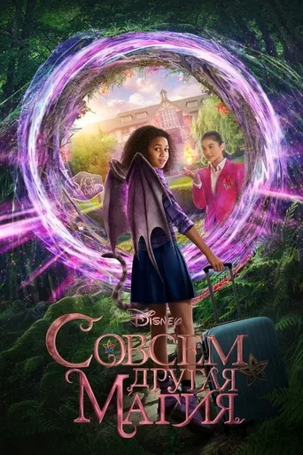

Совсем другая магия 2020
13-летняя Нори, которая умеет превращаться в животных, и её лучшая подруга Рейна, управляющая силой огня, поступают в Академию магии, чтобы развить свои волшебные способности. На вступительном экзамене Рейна показывает блестящий результат и зачисляется в огненный класс. А вот Нори, превратившаяся вместо котёнка то ли в котекона, то ли в дратёнка - помесь кота и дракона, распределяют в класс шмагов - изгоев, дар которых нестабилен и непредсказуем. Считается, что такие ученики уязвимы для опасной и злой магии теней, и их способности подлежать подавлению. Однако Нори и её одноклассники стремятся доказать, что и они достойны быть волшебниками.
Открыть в каталогеДанные и постеры принадлежат их правообладателям. Этот продукт использует TMDB API, но не одобрен и не сертифицирован TMDB.